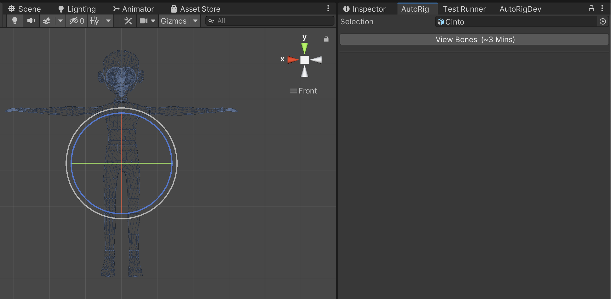
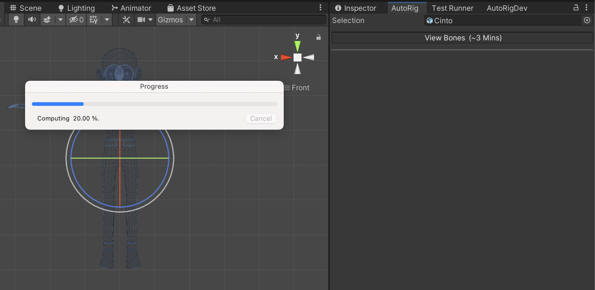
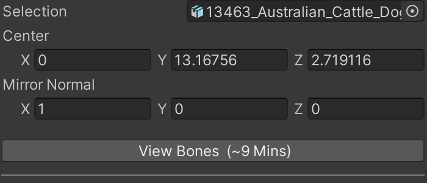
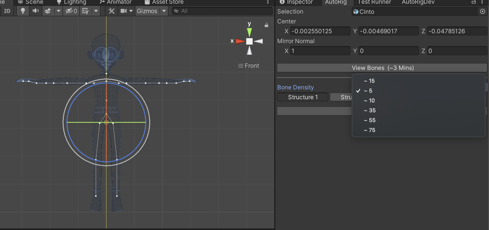
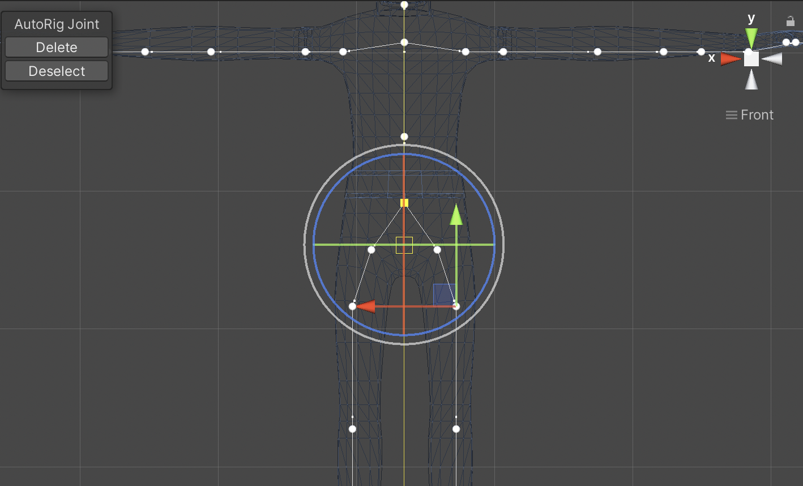

AutoRig lets you rig characters right inside Unity Editor within a few minutes. AutoRig uses machine learning to automatically create your character’s Skeleton/Rig, it works with characters that have varying bone structures.
AutoRig gives you the option to increase or decrease the number of bones/joints based on your application’s needs.
1) Setup
In Unity3d, open the asset store by going to the menu and clicking Window -> General -> Asset Store or Window -> Asset Store or Command+9
Install AutoRig, Link: http://u3d.as/2wmR
AutoRig, depends on Barracuda, install unity Barracuda package.
Once the asset is installed, go to the menu and click Window -> AutoRig.

2) Create Rig/Bone/Skeleton
Select a gameObject in the Scene.
The application works best when characer is in T-Pose.
Press View Bones button.

The root of the rig, will be the closest joint the the center.
AutoRig will try an make the rig symmetric will respect to the Mirror Normal.

3) Select bone density
Based on the number of bones you want your character to have, select the bone density.
You do this by clicking the drop down next to Bone Density.

4) Select the bone structure.
A character can have different bone structures, choose the one that best fits your character.
4) Adjust Or Delete Joint.
You can adjust or delete a joint by clicking on the joint in the scene view.

6) Saving the mesh.
You can decide to persist the mesh by clicking on the Save Mesh check box. If this checkbox is not selected, AutoRig will not save the mesh to file, bone changes will be lost after the editor is closed.